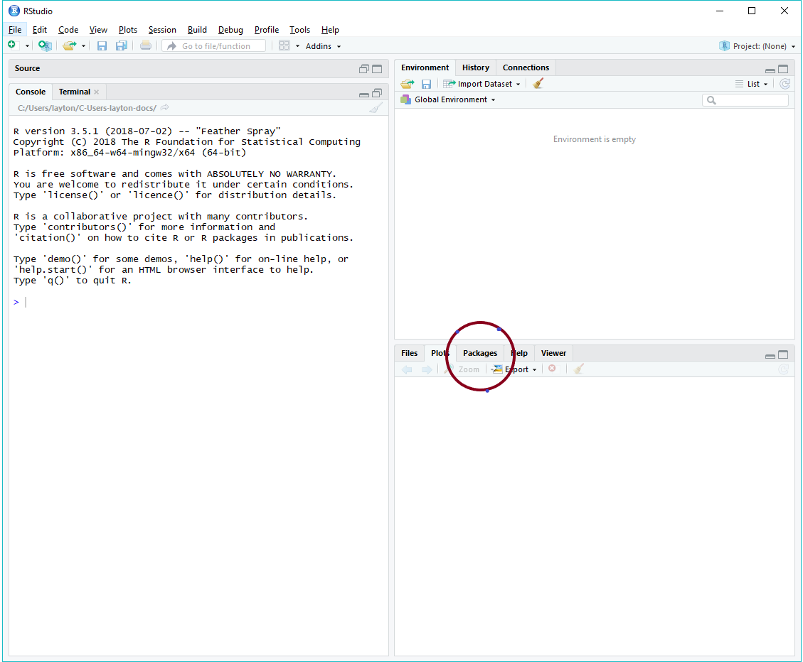
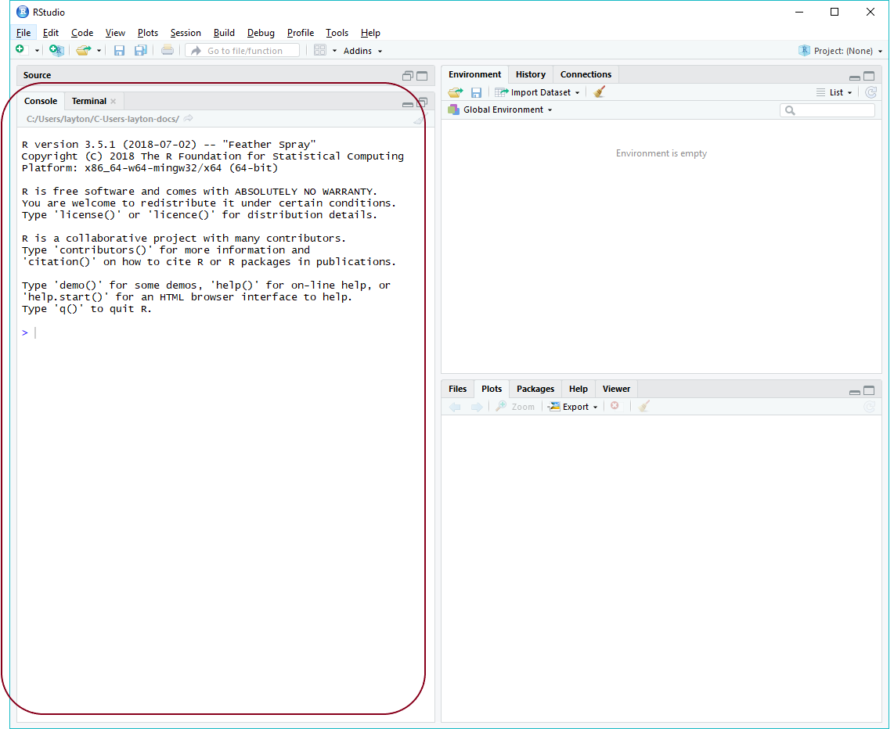

Chapter 1 Getting started
Unless noted otherwise, we assume throughout that the workshop attendee is an R novice. Thus the first steps are to install R and RStudio.
1.1 Install R and RStudio
Windows users may have to login as an Administrator (localmgr) before installing the software.
- Install R for your OS: https://cloud.r-project.org
- Install RStudio, a user interface for R: https://www.rstudio.com/products/rstudio/#Desktop
If you already have R and RStudio installed, please update to the most recent releases and update your R packages as well.
If you need additional assistance for Mac OS or Linux, these links might be useful
- Install R and RStudio on Mac OS by Michael Galarnyk (or you can Google more recent instructions)
- How to Install R Ubuntu 16.04 Xenial by Kris Eberwein (or you can Google more recent instructions)
1.2 Installing an R package
If you know how to install R packages, you can go directly to section 1.3.
For the R novice, an R package is like an “app” for R—a collection of functions, data, and documentation for doing work in R. To install a package using RStudio,
- Launch RStudio
The RStudio interface has several panes.

Find the window pane with the Packages tab.
- Select the Packages tab
- Click Install
In the dialog box,
- Type the name of the package, for example, drat (a package we use to access the midfield data)
- Select the Install dependencies check-box
- Click Install
This approach is suitable for any package that resides in the Comprehensive R Archive Network (CRAN) package repository.
Some packages, like midfielddata are too large to be stored in CRAN, so we use a special “drat-repository” to make the package source files available.
To install the packages, click your cursor in the RStudio Console pane.

In the console, at the cursor (indicated by >), type each of the following lines of code and press Enter from your keyboard, one line at a time. Alternatively, you can copy a line of code from this page, paste it in the console, and press Enter.
drat::addRepo("midfieldr")
install.packages("midfielddata")
install.packages("devtools")
devtools::install_github("MIDFIELDR/midfieldr") If you successfully negotiated this section, you can skip the next section because you have installed the packages we need to get started.
1.3 Install the MIDFIELD packages
If you know how to install R package, follow the instructions at https://midfieldr.github.io/midfieldr to install
- drat
- devtools
- midfielddata
- midfieldr
At the moment, midfieldr is only available from GitHub. Once the package has been submitted to CRAN, you can download it and update it from CRAN.